About Me
I’m currently a 3rd-year Ph.D. student at South China University of Technology and The Hong Kong Polytechnic University (dual Ph.D. degree programme), supervised by Prof. Yi Cai, Prof. Qing Li and Prof. Wenqi Fan. Prior to this, I earned my B.E. degree in Software Engineering from South China University of Technology in 2023.
I am currently a Research Intern at  Zhipu AI (Z.AI), GLM-V Team (since Apr. 2025), working on multimodal reasoning and MLLM post-training for the GLM-V series of models (GLM-4.1V-Thinking, GLM-4.5V and GLM-5V-Turbo).
Zhipu AI (Z.AI), GLM-V Team (since Apr. 2025), working on multimodal reasoning and MLLM post-training for the GLM-V series of models (GLM-4.1V-Thinking, GLM-4.5V and GLM-5V-Turbo).
My research interests revolve around Multimodal Reasoning, Video Understanding and MLLM Post-training.
🐈 Collaboration: I am looking for motivated collaborators interested in the above topics. If you would like to explore these directions together, feel free to contact me. UG/MSc students are also welcomed! 🌱
🔥 News
- 2026.10🏆 Awarded the National Scholarship (国家奖学金), Ministry of Education of China!
- 2026.09🚀 Released SciGen-Verifier on arXiv.
- 2026.09🎉 Our HG-Bench is accepted by EMNLP 2026!
- 2026.07🎉 One paper is accepted by ACM MM 2026.
- 2026.04🎉 Our CADMate is accepted by ACL 2026!
- 2026.04🎉 One paper is accepted by IEEE TCSVT 2026.
- 2026.02🎉 Our EduDiag is accepted by CVPR 2026!
- 2025.05🎉 Our ExpStar is accepted by ACM MM 2025!
- 2025.05🎉 Our CADReview is accepted by ACL 2025 (Oral)!
- 2025.04💼 I join Zhipu AI for an internship!
- 2025.01🎉 One paper is accepted by NAACL 2025!
- 2024.07🎉 Two papers are accepted by ACM MM 2024!
- 2024.03🎉 One paper is accepted by IEEE TCSVT 2024.
- 2024.02🎉 One paper is accepted by IEEE TIP 2024.
- 2023.08🎉 One paper is accepted by ACM MM 2023!
📝 Selected Publication（Full List）
* Equal contribution.
🤖 Technical Report
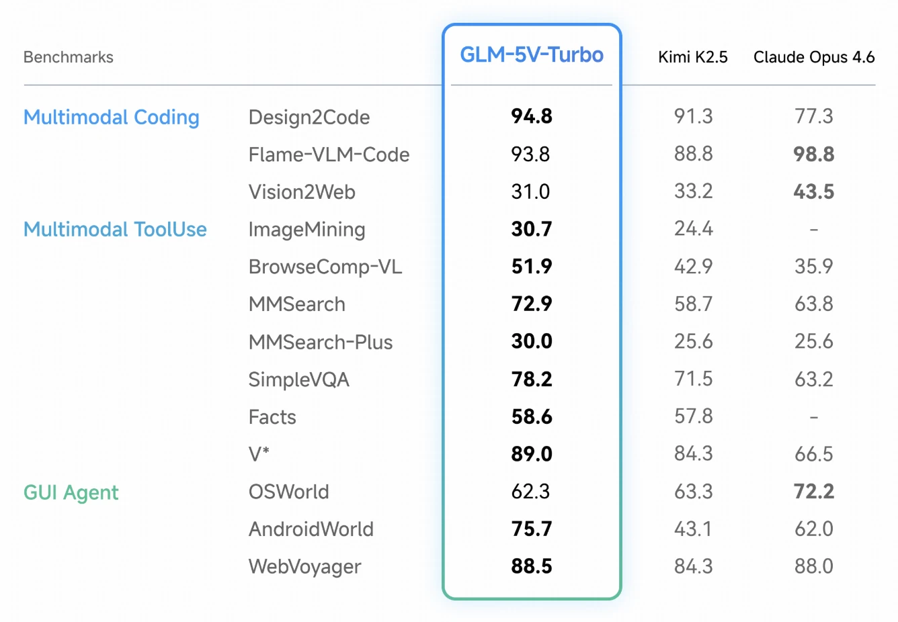
GLM-5V-Turbo: Toward a Native Foundation Model for Multimodal Agents
Zhipu AI, GLM-V Team
- GLM-5V-Turbo is a multimodal coding foundation model built for vision-based coding tasks. It natively processes images, video and text, while also excelling at long-horizon planning, complex coding, and action execution. Deeply optimized for agent workflows, it works seamlessly with agents such as Claude Code and OpenClaw.
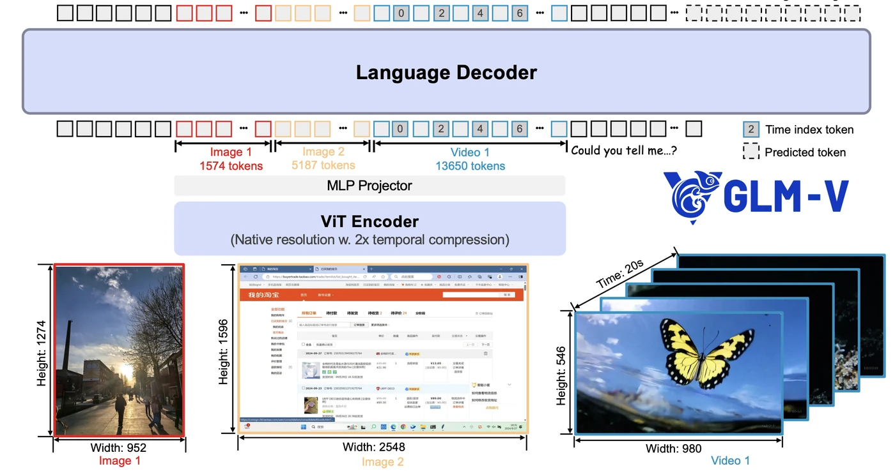
Zhipu AI, GLM-V Team
Paper Github  GLM-4.1V-9B-Thinking
GLM-4.1V-9B-Thinking  GLM-4.5V BIB
GLM-4.5V BIB
- We release GLM-4.1V-9B-Thinking, a new open-source VLM designed to explore the upper limits of reasoning in vision-language models, together with GLM-4.5V, which is built on Zhipu AI’s next-generation flagship text foundation model GLM-4.5-Air (106B parameters, 12B active).
🧠 Multimodal Reasoning
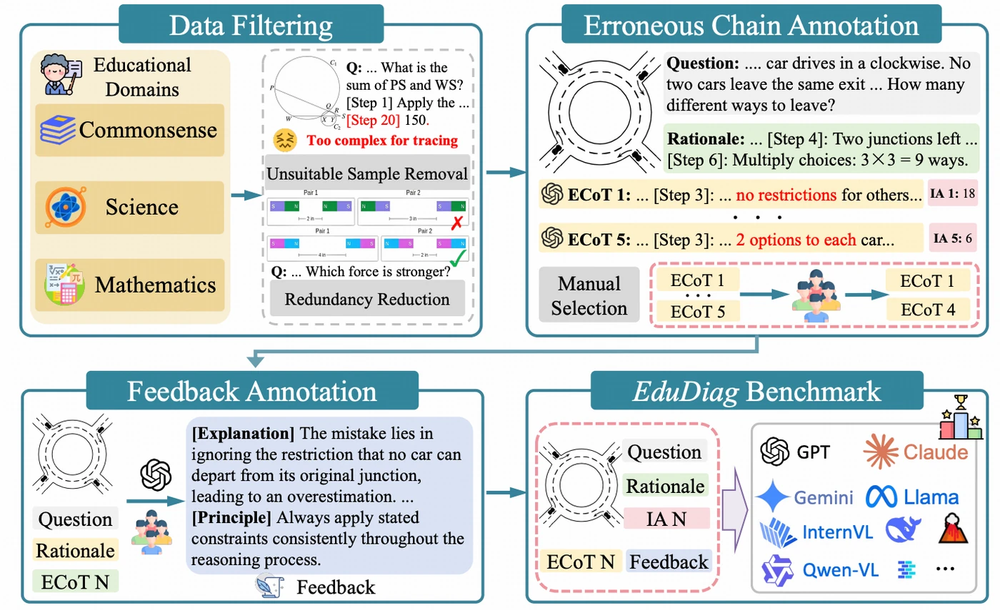
Jiali Chen, Yuqi Xue, Xusen Hei, DingBa Fu, Yuancheng Wei, Jiayuan Xie, Yi Cai
- EduDiag requires models to reconstruct erroneous reasoning chains from students’ incorrect answers and generate the corresponding corrective feedback, spanning commonsense reasoning, science, and mathematics.
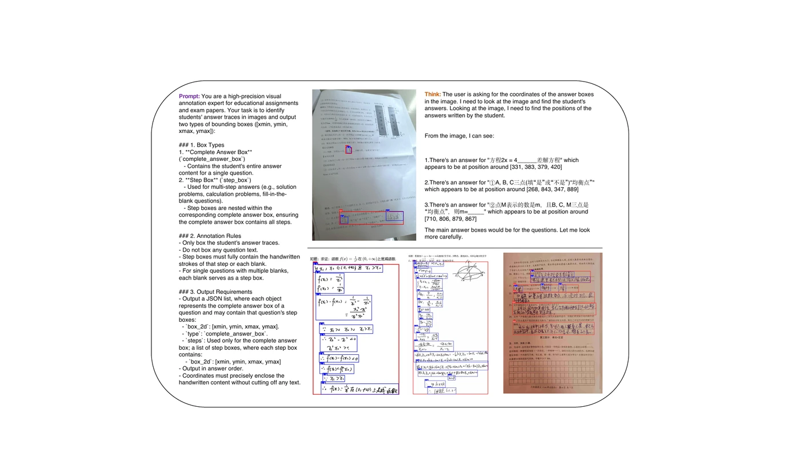
Chuangxin Zhao, Boyan Shi, Yanling Wang, Yijian Lu, Canran Xiao, Jiali Chen, Jun Xia, Yan Wang, Ji Qi, Juanzi Li
- HG-Bench is a benchmark of 500 human-annotated multi-page K-12 handwritten homework samples for answer-region and step-level grounding, revealing a substantial capability gap of current MLLMs in fine-grained handwritten grounding.
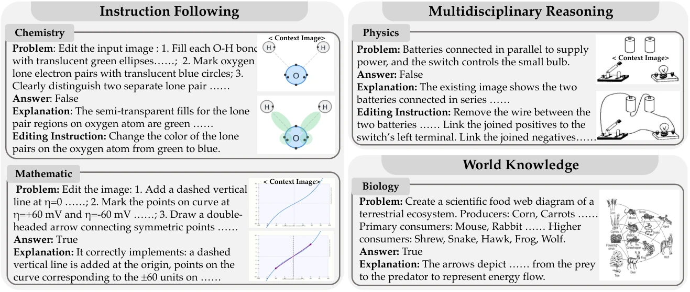
SciGen-Verifier: A Multimodal Reasoner for Explainable Verification in Scientific Image Generation
Jiali Chen, Zhengteng Lin, Zuqi Wang, Shirong Lin, Xi Yu, Xusen Hei, DingBa Fu, Jiayuan Xie, Yi Cai
- We introduce SciGen-Verify, a benchmark for explainable verification of scientific image generation with a three-tier protocol, and SciGen-Verifier, a multimodal verifier trained with cold-start SFT and curriculum-based two-stage RL that is competitive against much larger proprietary models and serves as an online critic for iterative image rectification.
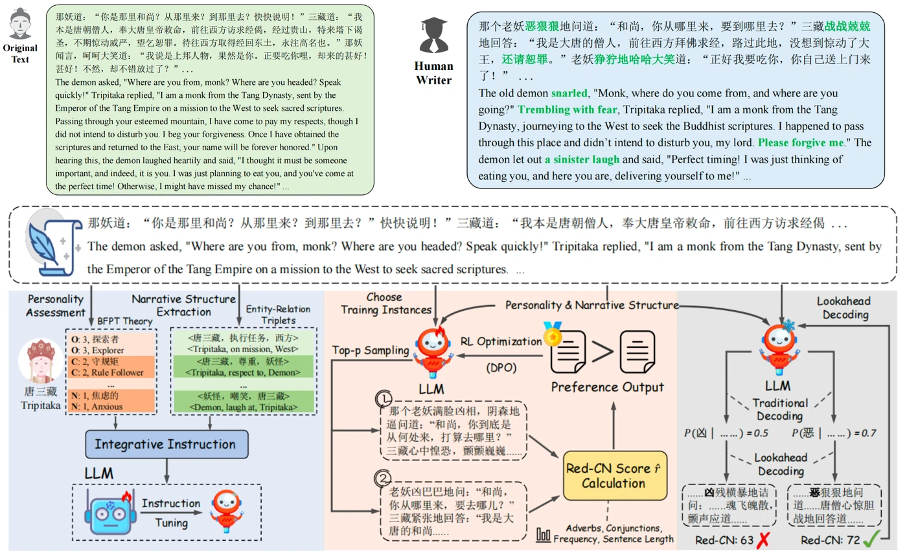
Classic4Children: Adapting Chinese Literary Classics for Children with Large Language Model
Jiali Chen, Xusen Hei, Yuqi Xue, Zihan Wu, Jiayuan Xie, Yi Cai
Paper arXiv Code BIB Findings of NAACL 2025
- Our proposed InstructChild explicitly leverages children’s reading preferences to guide the LLM in generating child-friendly text. We also construct the Classic4Children dataset for a comprehensive evaluation.
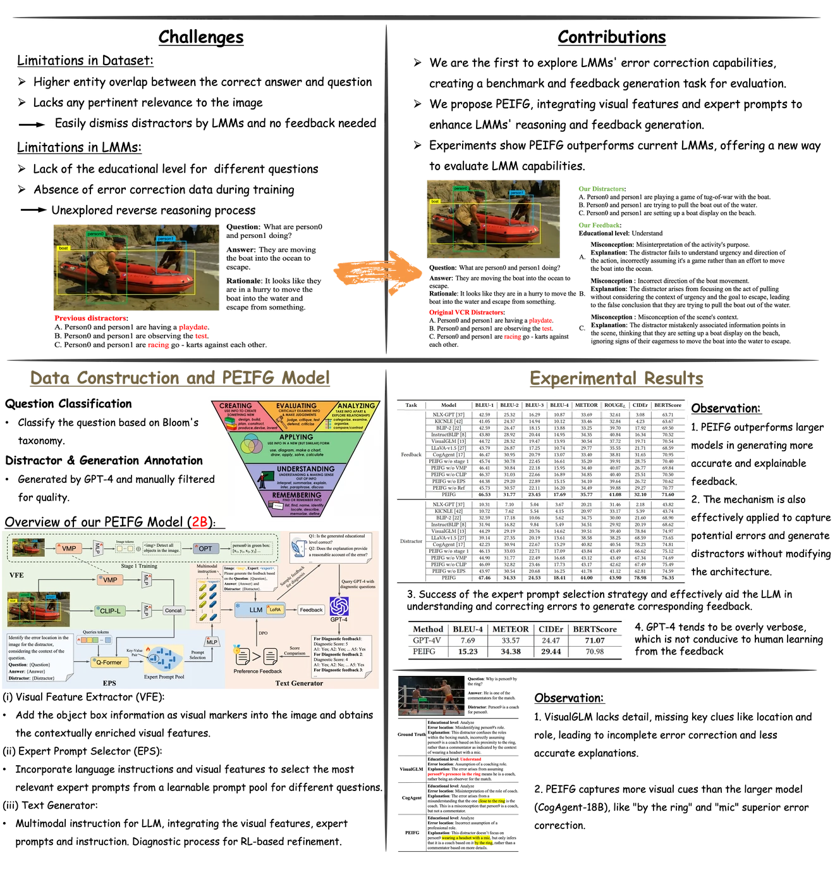
Learning to Correction: Explainable Feedback Generation for Visual Commonsense Reasoning Distractor
Jiali Chen, Xusen Hei, Yuqi Xue, Yuancheng Wei, Jiayuan Xie, Yi Cai, Qing Li
- We investigate the error correction capabilities of large multimodal models (LMMs), construct a new benchmark and introduce the feedback generation task for evaluation. I would like to extend my heartfelt gratitude to my girlfriend, Ms. Wen, for inspiring the idea behind this paper.
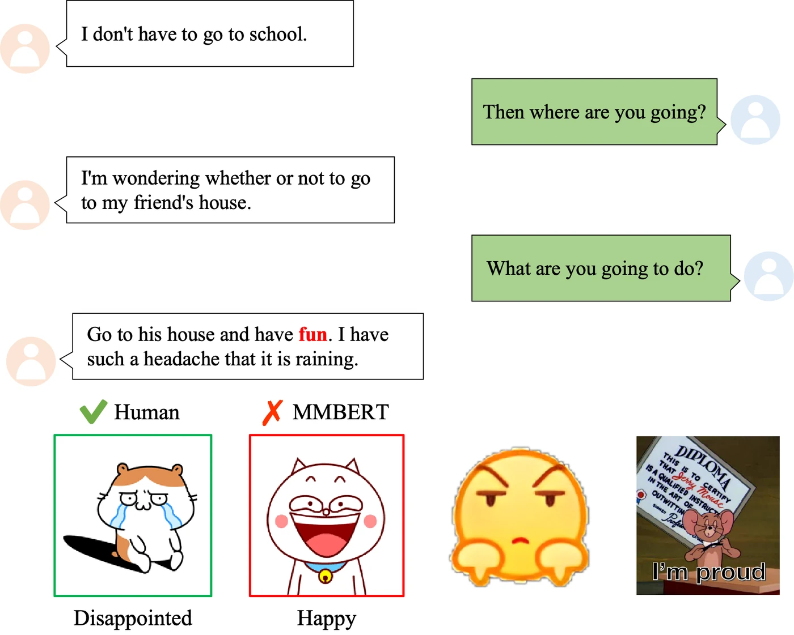
Deconfounded Emotion Guidance Sticker Selection with Causal Inference
Jiali Chen, Yi Cai, Ruohang Xu, Jiexin Wang, Jiayuan Xie, Qing Li
- We present a Causal Knowledge-Enhanced Sticker Selection model that addresses spurious correlations in sticker selection by using a causal graph and a knowledge-enhanced approach.
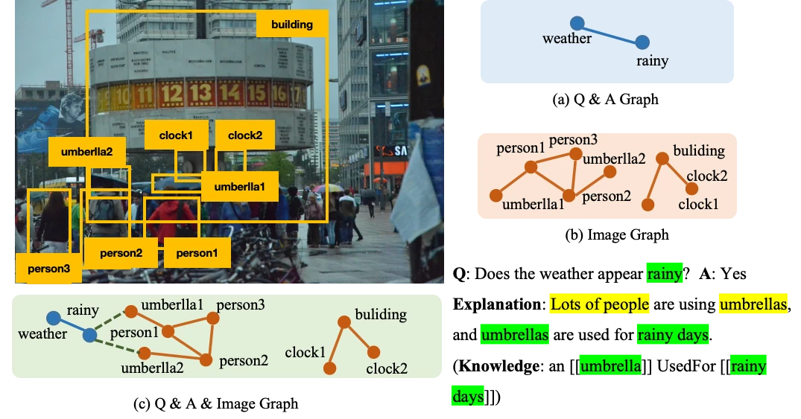
Knowledge-Augmented Visual Question Answering with Natural Language Explanation
Jiayuan Xie, Yi Cai, Jiali Chen, Ruohang Xu, Jiexin Wang, Qing Li
- We introduce KICNLE, which generates consistent answers and explanations with external knowledge.
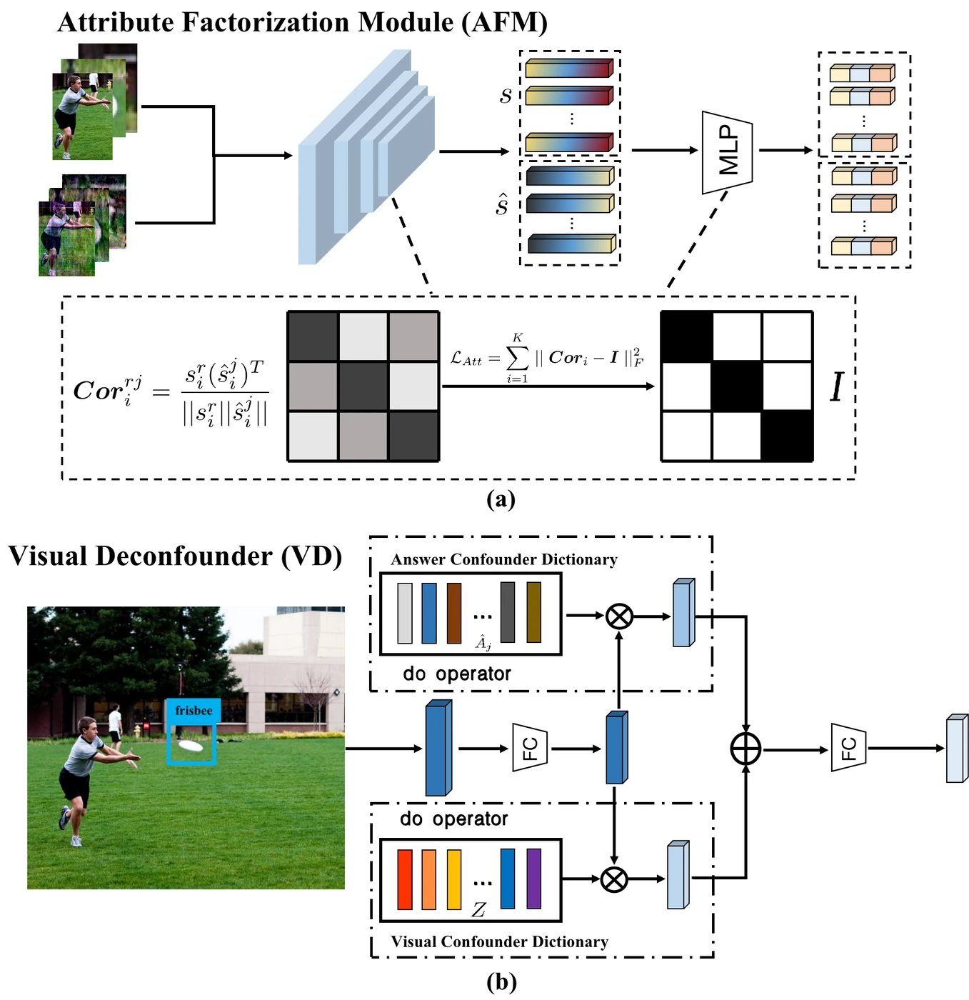
Deconfounded Visual Question Generation with Causal Inference
Jiali Chen, Zhenjun Guo, Jiayuan Xie, Yi Cai, Qing Li
- We identify that previous models frequently learn highly co-occurring object relationships and attributes, which is an inherent bias in question generation. This study first introduces a causal perspective on VQG and adopts the causal graph to analyze spurious correlations among variables. We propose KECVQG to mitigate the impact of spurious correlations for VQG.
🧊 3D Coding
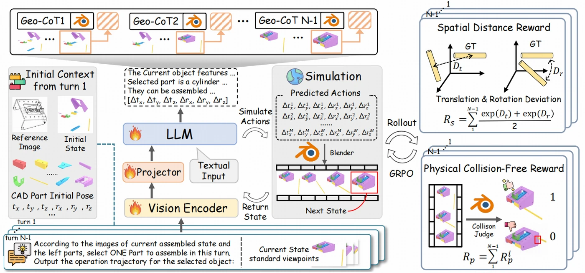
CADMate: Generating CAD Assembly Plan with Geometric Chain-of-Thought and Spatial Physical Rewards
Jiali Chen, DingBa Fu, Xusen Hei, Yuhang Liu, Yiyang Chen, Jiayuan Xie, Wenqi Fan, Yi Cai
- We formulate CAD assembly as a parametric action prediction task and propose CADMate, an MLLM-based framework that autoregressively predicts 6-DoF transformations to assemble parts from a reference image.
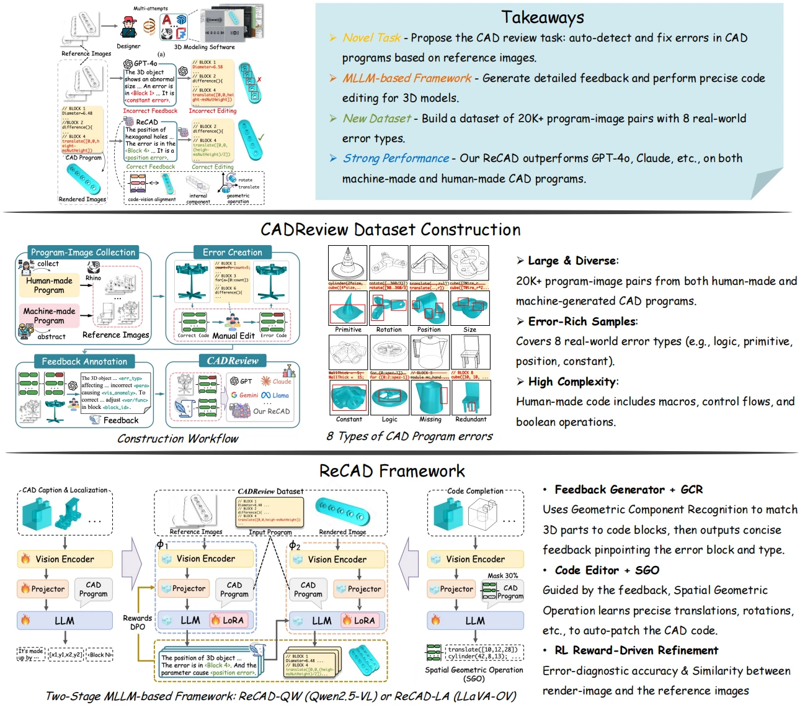
CADReview: Automatically Reviewing CAD Programs with Error Detection and Correction
Jiali Chen*, Xusen Hei*, Hongfei Liu, Yuancheng Wei, Zikun Deng, Jiayuan Xie, Yi Cai, Qing Li
Paper arXiv Code Project Page BIB ACL 2025 Oral
- We propose ReCAD, an MLLM-based framework for automatic CAD program error detection and correction. It enables MLLMs to achieve precise code-vision alignment with geometric component recognition and spatial operation mechanisms. Our newly introduced CADReview dataset and experiments show ReCAD significantly outperforms existing MLLMs in CAD error correction.
🎬 Video Understanding
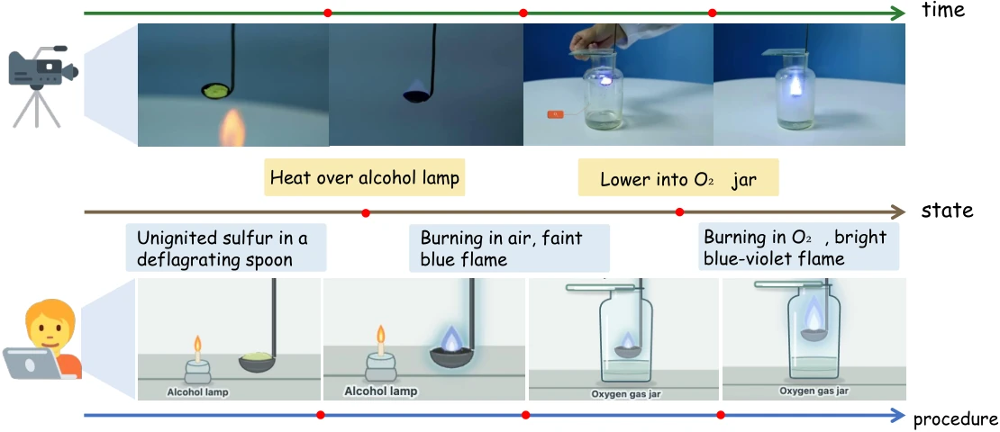
Lab2Sim: Turning Real-World Experiment Videos into Interactive Virtual Experiments
Xusen Hei, Jiali Chen, Jinyu Yang, Yi Cai
- Lab2Sim is a benchmark of 218 instructional experiment videos spanning chemistry, physics and biology, with evidence-grounded specifications and 11,881 rubric items for rubric-based evaluation of fidelity and operability. We further propose EduVideo2Code, a pipeline that improves converting science videos into interactive simulation code.
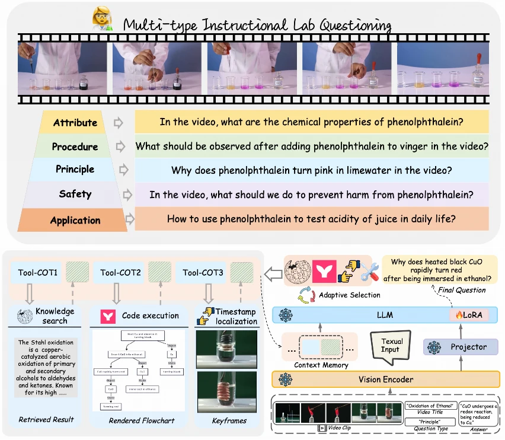
LabSeed: Towards Multi-discipline Question Generation for Scientific Instructional Videos
Zihan Wu*, Jiali Chen*, Xusen Hei, Yuhang Liu, Yi Cai
- This paper introduces LabQG, a diverse scientific video dataset with 13K Q&A pairs. We train LabSeed-4B, a semantic-adaptive tool-integrated framework for question generation.
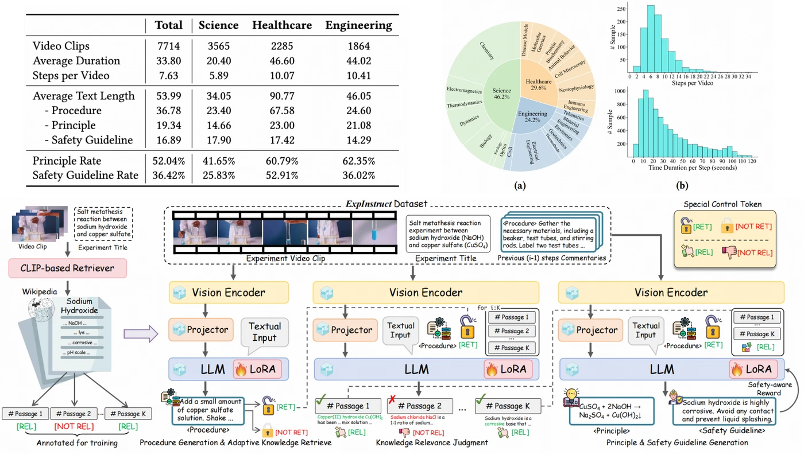
ExpStar: Towards Automatic Commentary Generation for Multi-discipline Scientific Experiments
Jiali Chen*, Yujie Jia*, Zihan Wu, Jinyu Yang, Jianpeng Chen, Xusen Hei, Jiayuan Xie, Yi Cai, Qing Li
Paper arXiv Code Project Page BIB
- We present ExpStar, an LMM tailored for automatic commentary generation in multi-discipline scientific experiments, equipped with adaptive knowledge retrieval and safety-aware optimization.
🎖 Honors and Awards
- 2026: National Scholarship (国家奖学金), Ministry of Education of China.
- 2024: Principal’s Scholarship of SCUT.
- 2024: First Prize of the 17th National College Student Software Contest.
- 2023: Excellent Degree Dissertation of SCUT (Bachelor Degree; extended version accepted by TIP 2024).
- 2023: Golden Award, Global AI Challenge for Building E&M Facilities.
📖 Educations
- 2026.01 - now: Ph.D. student (Dual Ph.D. Degree Programme with SCUT), Department of Computing, The Hong Kong Polytechnic University.
- 2023.09 - now: Ph.D. student, Key Laboratory of Big Data and Intelligent Robot, South China University of Technology.
- 2019.09 - 2023.06: B.E. in Software Engineering, South China University of Technology.
- 2025.04 - now: Research Intern, Zhipu AI (Z.AI), GLM-V Team.
🧑⚖️ Academic Services
Journal Reviewer
- IEEE Transactions on Pattern Analysis and Machine Intelligence (TPAMI).
- IEEE Transactions on Image Processing (TIP).
Conference Reviewer
- Top-tier ML/AI Conferences: ICLR, AAAI, KDD.
- Top-tier CV Conferences: CVPR, ICCV, ECCV.
- Top-tier NLP Conferences: ACL, EMNLP, NAACL.
- Top-tier Multimedia Conference: ACM MM.